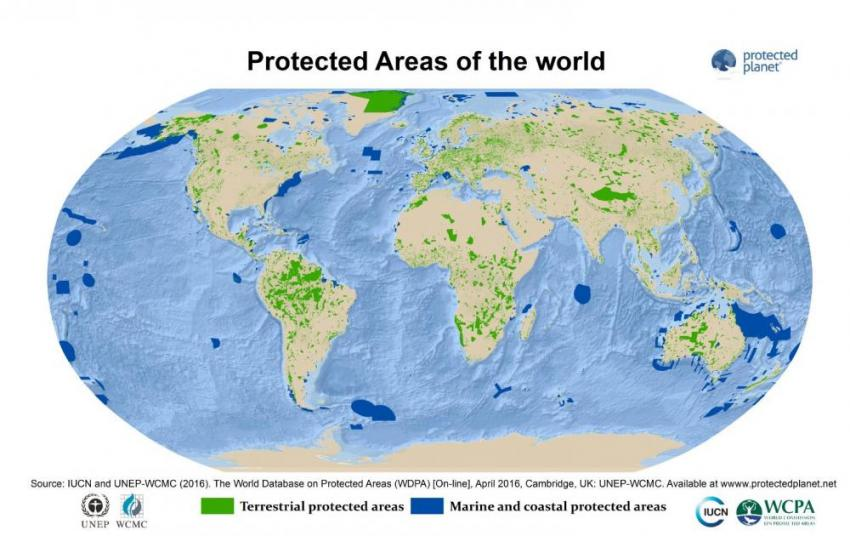
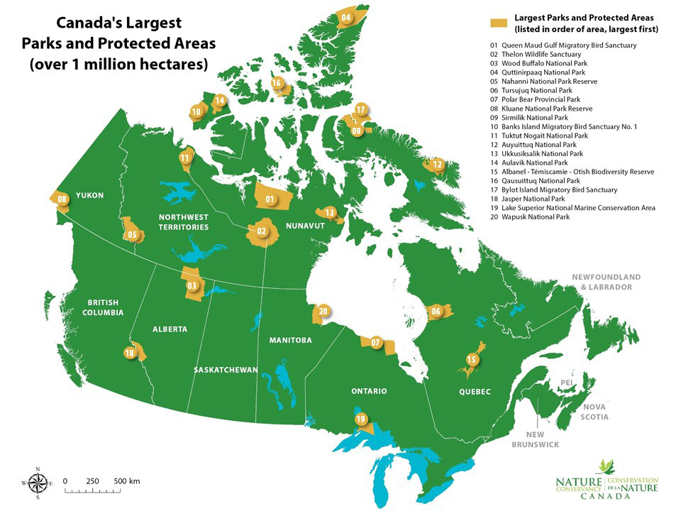

About Protected Areas

A protected area is a clearly defined geographical space, recognised, dedicated and managed, through legal or other effective means, to achieve the long term conservation of nature with associated ecosystem services and cultural values. (IUCN Definition 2008)
Protected areas – national parks, wilderness areas, community conserved areas, nature reserves and so on – are a mainstay of biodiversity conservation, while also contributing to people’s livelihoods, particularly at the local level. Protected areas are at the core of efforts towards conserving nature and the services it provides us – food, clean water supply, medicines and protection from the impacts of natural disasters. Their role in helping mitigate and adapt to climate change is also increasingly recognized; it has been estimated that the global network of protected areas stores at least 15% of terrestrial carbon.
Protected areas or conservation areas are locations which receive protection because of their recognized natural, ecological or cultural values. There are several kinds of protected areas, which vary by level of protection depending on the enabling laws of each country or the regulations of the international organizations involved.
The term "protected area" also includes Marine Protected Areas, the boundaries of which will include some area of ocean, and Transboundary Protected Areas that overlap multiple countries which remove the borders inside the area for conservation and economic purposes. There are over 161,000 protected areas in the world (as of October 2010) with more added daily, representing between 10 and 15 percent of the world's land surface area. By contrast, only 1.17% of the world's oceans is included in the world's ~6,800 Marine Protected Areas.
Protected areas are essential for biodiversity conservation, often providing habitat and protection from hunting for threatened and endangered species. Protection helps maintain ecological processes that cannot survive in most intensely managed landscapes and seascapes.
More about Protected Areas
- IUCN - International Union for Conservation of Nature
- Protected Areas of Canada
- Protected Planet
- Protected Areas of Ontario
- Conventional on Biological Diversity
- Biodiversity A-Z
© Copyright Thalyta Veiga - Assignment 2 - COMP213 - Fall 2018
Credits to IUCN, Government of Canada, Government of Ontario, Conventional on Biological Diversity, Biodiversity A-Z, Protected Planet
Back to index